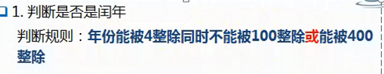
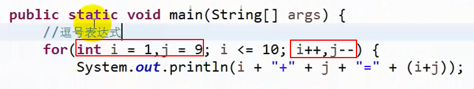

流程控制语句：
顺序结构；
分支结构；
循环结构；
----------------------------------------------------------------------------------------------------------------------------------------------------
分支：
单分支：
if(条件必须为boolean类型){
代码块;
}
if 只有一行代码，可以省略大括号。
----------------------------------------------------------------------------------------------------------------------------------------------------
双分支：
if(条件){
}else{
}
注意：
1.else不能带条件；
2.如果 if或else 的代码块里只有一行代码，可以省略大括号；
3.一定会选择一个分支执行。


--------------------------------------------------------------------------------------------------------------------------------------------------------------------------
多分支：
多重if
if(条件){
满足某一个条件，执行分支语句，
后边的其它分支则略过。
}else if(条件){
可以有多个else-if
}else{
也可以省略不写，
以上条件都不成立，执行此代码块。
}
注意多重分支时,容易在编译时出现变量未初始化的错误

只有上面的语句是不行的,一定要让result变量在任何情况下都能初始化成功。所以最简单的办法就是再加一条else语句并且在里面给result赋值,这样在任何条件下result都能附上值。（也可以在定义时直接给result赋个初值,但这样不太好,if条件语句还是不太健全）

当然如果直接后面不调用result变量的话编译也不会报错

所以在使用某变量时, 要确保该变量在所有被使用到之前一定是已经初始化完成的。
-------------------------------------------------------------------------------------------------------------------------------------------------------------------------
注意, "只有在堆里开辟空间时, 才会出现在赋值语句执行之前给各种数据类型的变量赋上默认初始值, 之后才是赋值语句赋值", 也就是说,只有数组或其他的引用类型在new的时候, 数组的元素或引用类型的成员变量才会有赋默认值的现象。像局部变量(在方法体里定义的变量)这种不在堆里开辟新空间的, 是不会出现在赋值语句之前, 给他们赋一个默认值的。 另外还要注意, 如果数组没有new并且作为类的成员变量的话, 默认的初始化值是null。
举例如下:
下面的四个编译错误都是如下图红框一样的错误提示

---------------------------------------------------------------------------------------------------------------
各种数据类型的默认初始值: (包括基本数据类型和引用数据类型)
1、整数类型（byte、short、int、long）的基本类型变量的默认值为0。
2、单精度浮点型（float）的基本类型变量的默认值为0.0f。
3、双精度浮点型（double）的基本类型变量的默认值为0.0d。(单精度和双精度的默认值打印出来都是0.0)
4、字符型（char）的基本类型变量的默认为 “/u0000”。
5、布尔性的基本类型变量的默认值为 false。
6、引用类型的变量是默认值为null。 (包括了数组。数组本身还是一个引用类型的, 如果没有new时, 作为类的成员变量, 给他赋的默认值就是null, 但是数组new了之后, 就是给其各个元素赋默认值了)
-------------------------------------------------------------------------------------------------------------------------------------------------------------------------
多分支
switch(表达式){
case 字面常量值:
多行代码;
break; //结束switch,不加break则会继续穿透执行下面的代码。
case 字面常量值:
可以有多个case
break;
default:
代码;
break;
}
注意：
1."表达式"的值类型 与 case标签"字面常量值"类型相符合
2.switch"表达式"支持的类型：byte，short，int，char，String，enum(枚举) (也就是说不支持double、float、long等)
如果使用double类型的值, 报错如下:
下面这句话报错的意思是: switch不能是double类型的值。只允许是可转换的int值、字符串或enum变量。

上面的话也就是说允许将数据类型转换为了int的类型, 所以将double强转为int后就不会报错了,如下:
之所以说switch支持byte，short，char这些类型是因为它们在switch里面会自动类型转换为int

3.不能有相同的标签
4.支持标签堆叠(见后面例子)
break省略时的效果如下：

标签堆叠示例

-------------------------------------------------------------------------------------------------------------------------------------------------------------------------
多重 if 和 switch 的区别：
1.switch只能进行等值的判断；
多重if任何情况都可以（等值，范围）
2.都是等值的条件判断时，switch效率高一些。
（都进行等值判断时，switch的效率要高一些）
-------------------------------------------------------------------------------------------------------------------------------------------------------------------------
循环:
1. while(条件){
循环体
}
2. do {
循环体
}while(条件)
3. for(;;;){循环体}
分类：
固定次数循环：
for
非固定次数循环：
do—while
while
-------------------------------------------------------------------------------------------------------------------------------------------------------------------------
固定次数循环解题方式：
三要素：(次数)
循环变量的初始值；
循环变量的终止值；
循环的迭代（增量 ++）
非固定次数循环解题方式：
循环条件；
循环体；（重复的内容）
--------------------------------------------------------------------------------------------------------------------------------------------------------------------------
非固定次数：
while(条件语句){
循环体；（循环操作）
}
执行流程：先判断条件，后执行循环体。
条件成立执行循环体，不成立循环结束。
do{
循环体；
}while(条件语句);
执行流程：先执行循环体，后进行条件判断。
--------------------------------------------------------------------------------------------------------------------------------------------------------------------------
固定
for(初始值;终止值;迭代){
循环体;
}

注意:

---------------------------------------------------------------------------------------------------------------------------------------------------------------------------
break:
场合：switch、循环
作用：结束循环；
continue
场合：循环
作用：结束本次循环，进行下一次循环。
-------------------------------------------------------------------------------------------------------------------------------------------------------------------------
return; 语句
一个 return; 语句用来结束方法；
用于 void方法中，可以用于方法的任何地方。
--------------------------------------------------------------------------------------------------------------------------------------------------------------------------
虽然三个循环都可以互相转换,但是有的转换可能有一定的难度。
一般来说, while和do while更擅长解决非固定次数循环。尤其do while更擅长解决: 不管怎样都需要先执行一次循环体,然后再进行条件判断
for更擅长解决固定次数循环


do while循环能够让只在循环体中赋值的变量,在不初始化该变量的情况下,
也能正常使用,编译不会报错(注意和上面知识点中的一个"result"变量的例子相比)
举例如下:

如果用while循环则必须在使用循环前,先将score初始化

使用do while则可以不用先将score初始化

--------------------------------------------------------------------------------------------------------------------------------------------------------------------------
逗号表达式

结果样式

----------------------------------------------------------------------------------------------------------------------------------------------------
小数的格式化
例:


输出结果:


也可以用DecimalFormat实现科学计数法, 如下: (注意,构造器的参数中只能出现字母"E"而不能出现其他字母, 小写的"e"也不行, 否则运行会报错。并且需要注意: 小数点前后都可以用"0"和"#"做填充, 但是"E"后面只能用"0"做填充, 不能用"#",否则运行会报错)


———————————————————————手写与上传资料分割线——————————————————————